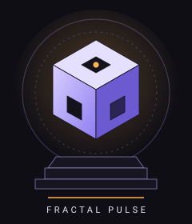

SPECIMEN
FP·000000 ·
current specimen preview slot
● audio idle · not recording
Explore
Sculpt
Perform
Forge
Design preview of a possible launch surface. Fractal Pulse is
not
integrated into the Cathedral or U4 Lab; that is a separate pass (see HOST_INTEGRATION when written).